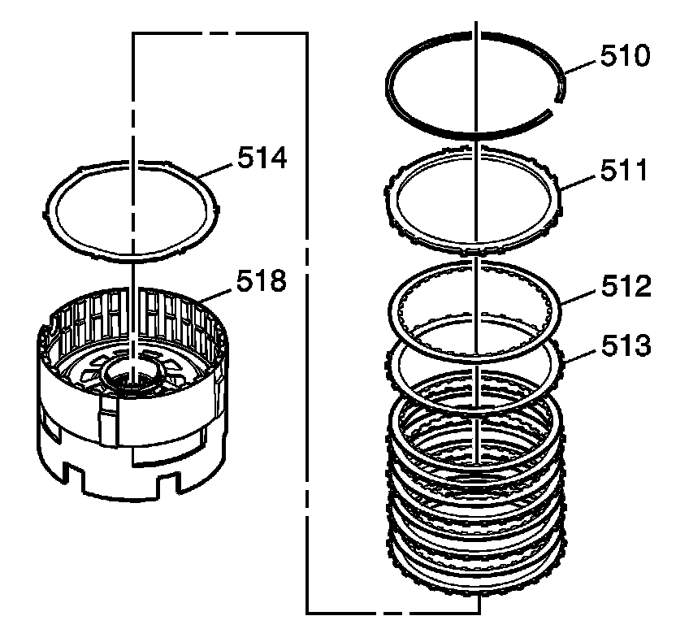
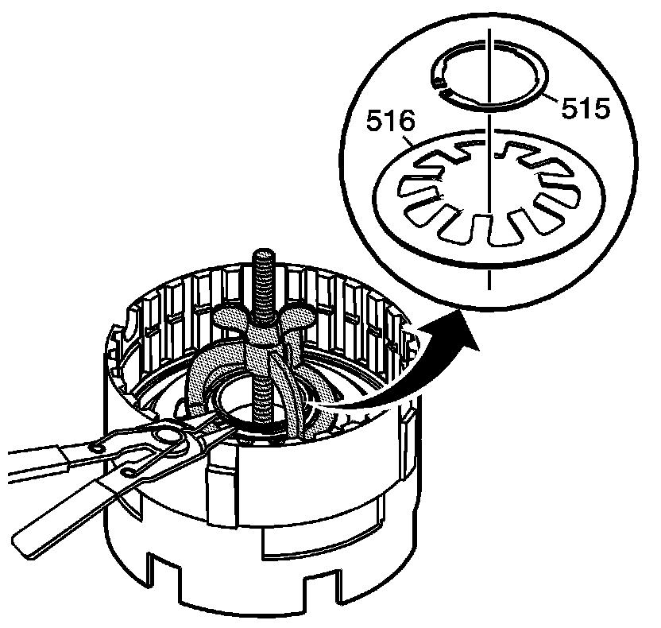
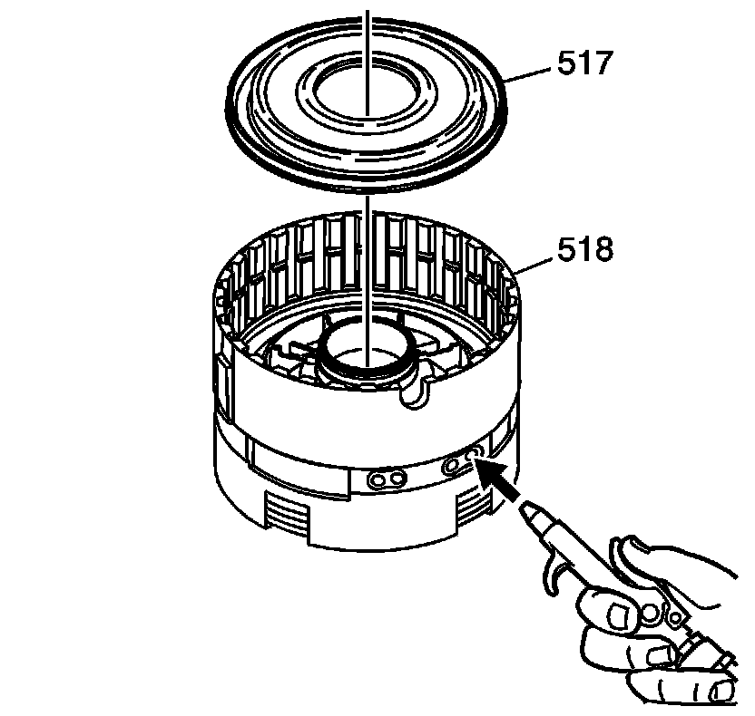
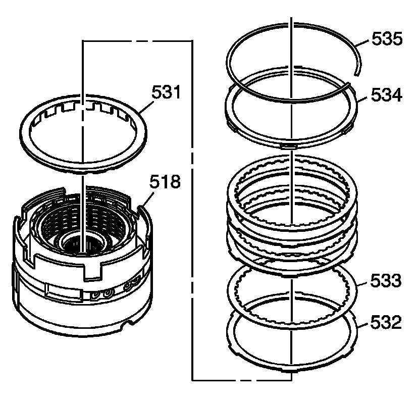
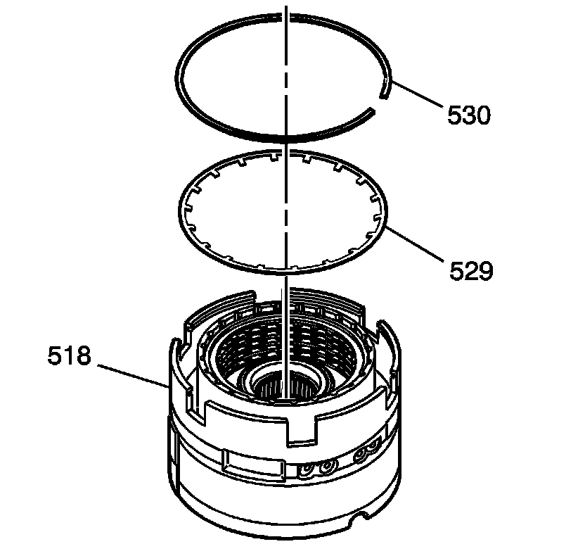
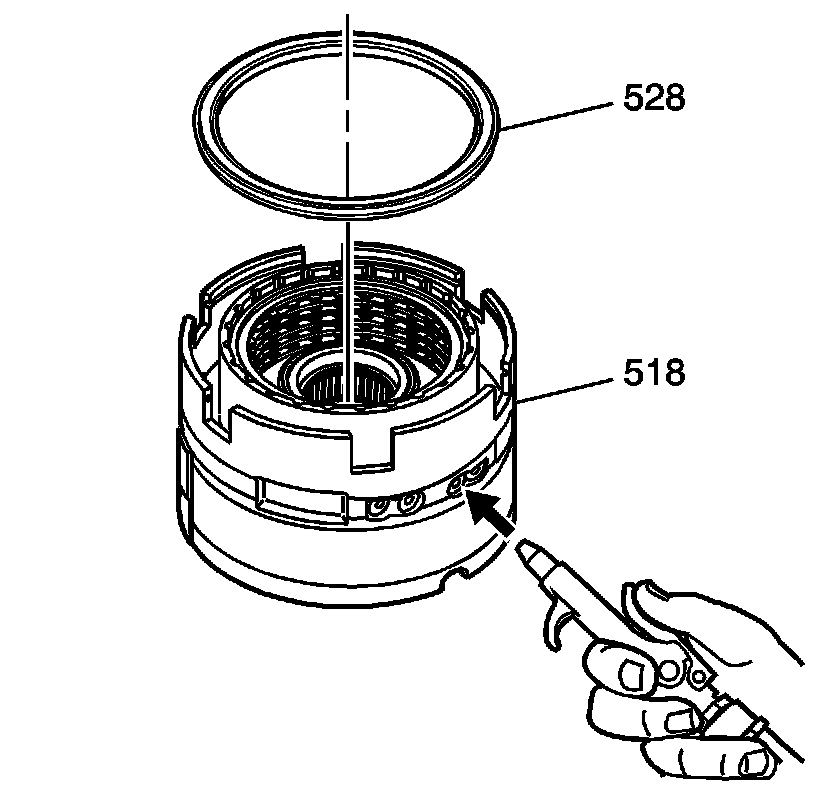
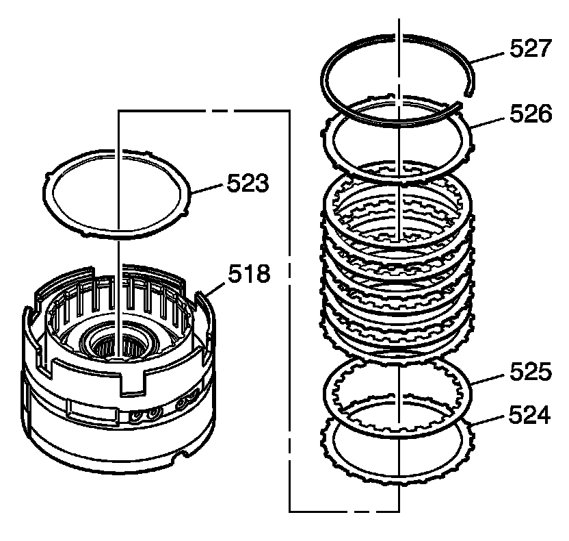
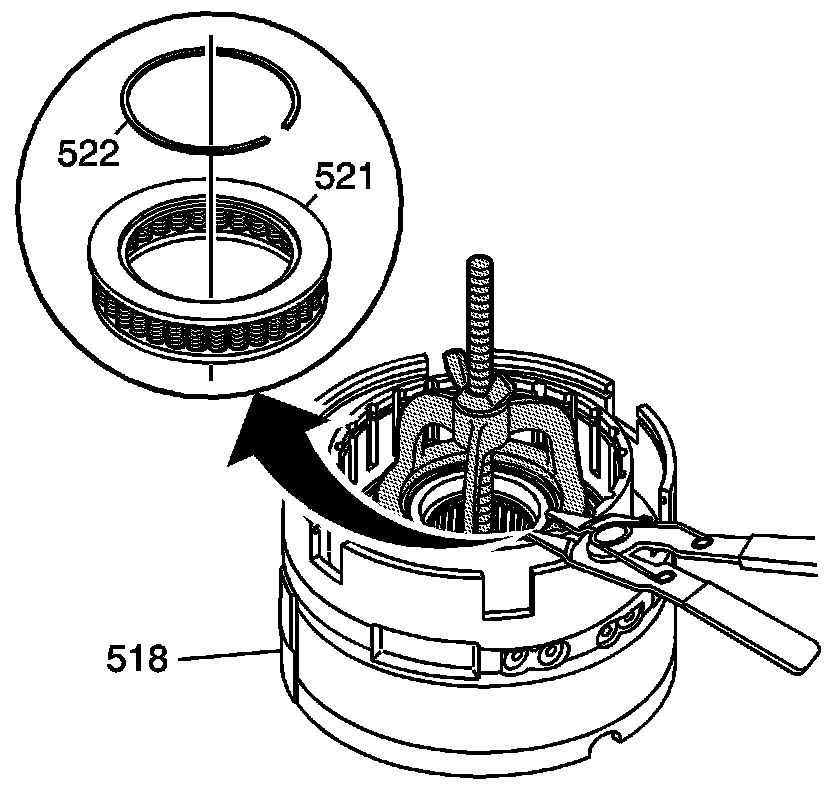
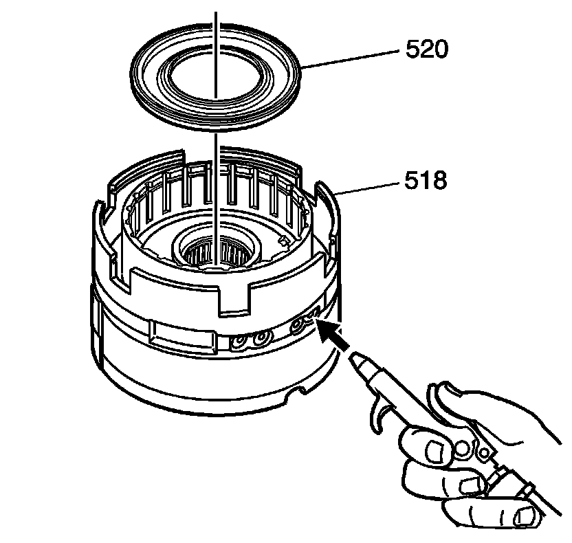

Center Support Disassemble
Center Support Disassemble
Tools Required
J 23327 Clutch Spring Compressor

1. Remove the snap ring (510).
2. Remove the low and reverse backing plate (511).
3. Remove the clutch plates (512, 513). Refer to Clutch Plate Selection Specifications (Clutch Plate Selection Specifications) .
4. Remove the low and reverse apply plate (514).

5. Use J 23327 to compress the low and reverse clutch spring (516).
6. Remove the low reverse clutch spring retainer ring (515).
7. Remove J 23327 from the center support.
8. Remove the clutch spring (516) from the center support.

Important: It may be necessary to use air pressure to remove the piston.
9. Remove the low and reverse piston (517) from the center support (518).

10. Remove the 2nd coast clutch plate retainer ring (535) from the center support (518).
11. Remove the 2nd coast clutch backing plate (534) from the center support (518).
12. Remove the clutch plates (532, 533). Refer to Clutch Plate Selection Specifications (Clutch Plate Selection Specifications) .
13. Remove the 2nd coast clutch spacer (531) from the center support (518).

14. Remove the 2nd coast clutch spring retainer (530).
15. Remove the 2nd coast clutch spring (529) from the center support (518).

Important: It may be necessary to use air pressure to remove the piston.
16. Remove the 2nd coast clutch piston (528) from the center support (518).

17. Remove the retainer ring (527) from the center support (518).
18. Remove the 2nd clutch backing plate (526) from the center support (518).
19. Remove the clutch plates (524, 525) from the center support (518). Refer to Clutch Plate Selection Specifications (Clutch Plate Selection Specifications) .
20. Remove the 2nd clutch apply plate (523) from the center support (518).

21. Use J 23327 to compress the 2nd clutch piston spring (521).
22. Remove the retainer ring (522) from the center support (518).
23. Remove the J 23327 from the cnter support (518).
24. Remove the 2nd clutch piston spring (521) from the center support (518).

Important: It may be necessary to use air pressure to remove the piston.
25. Remove the 2nd clutch piston (520) from the center support (518).